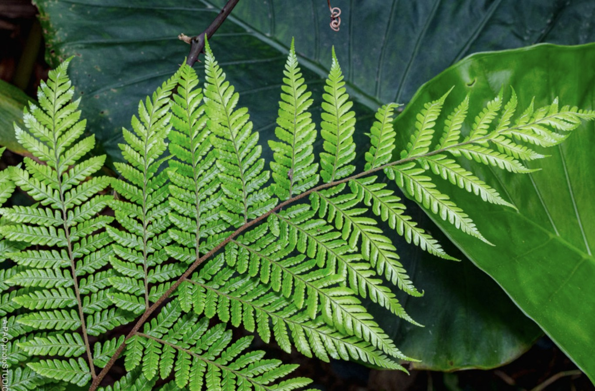
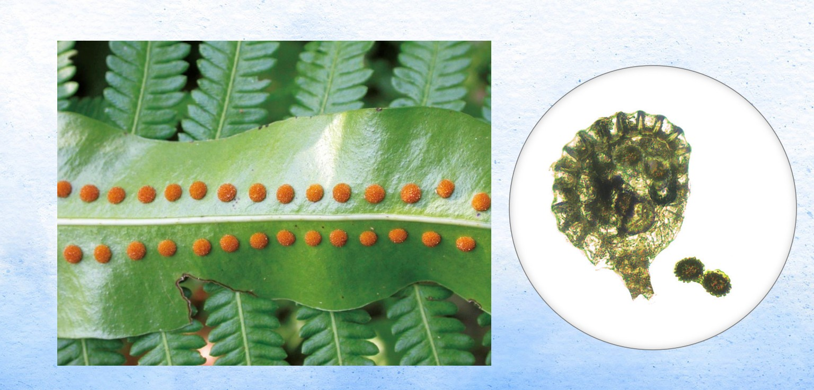
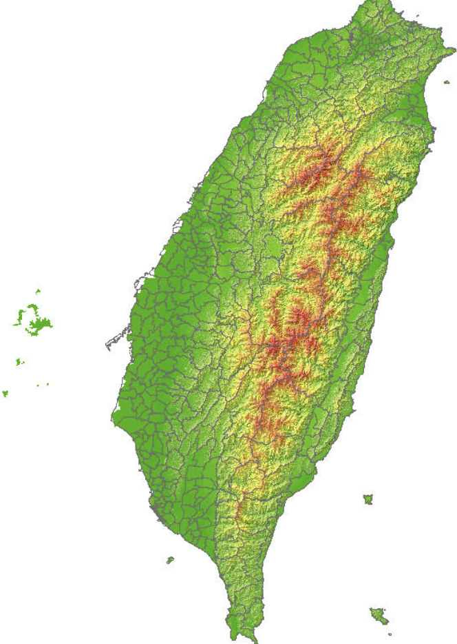
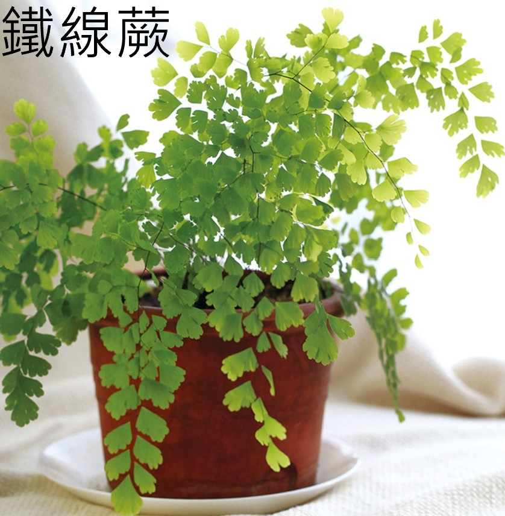
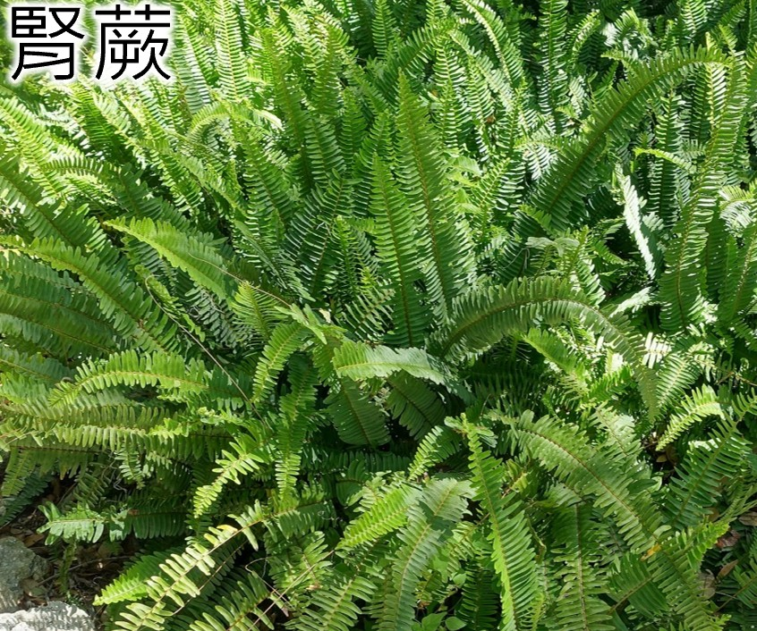
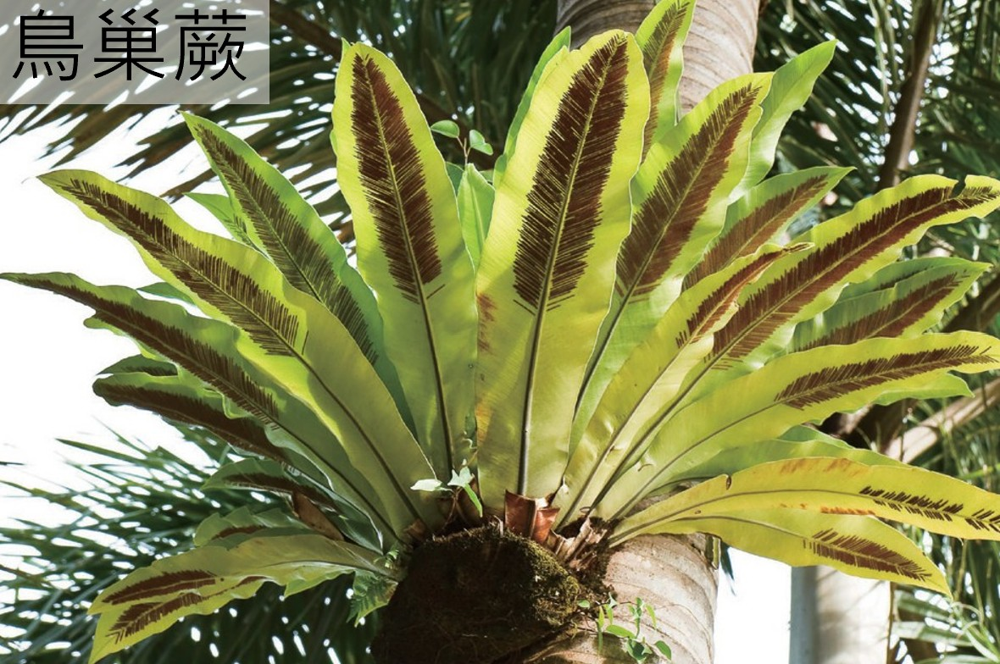
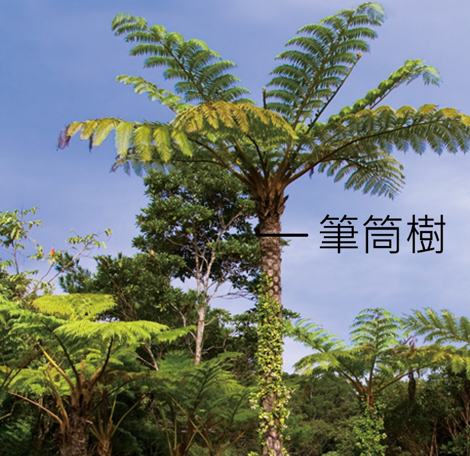
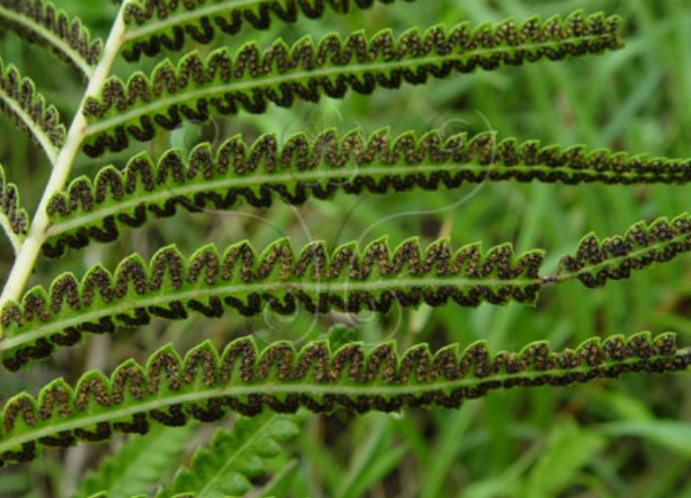
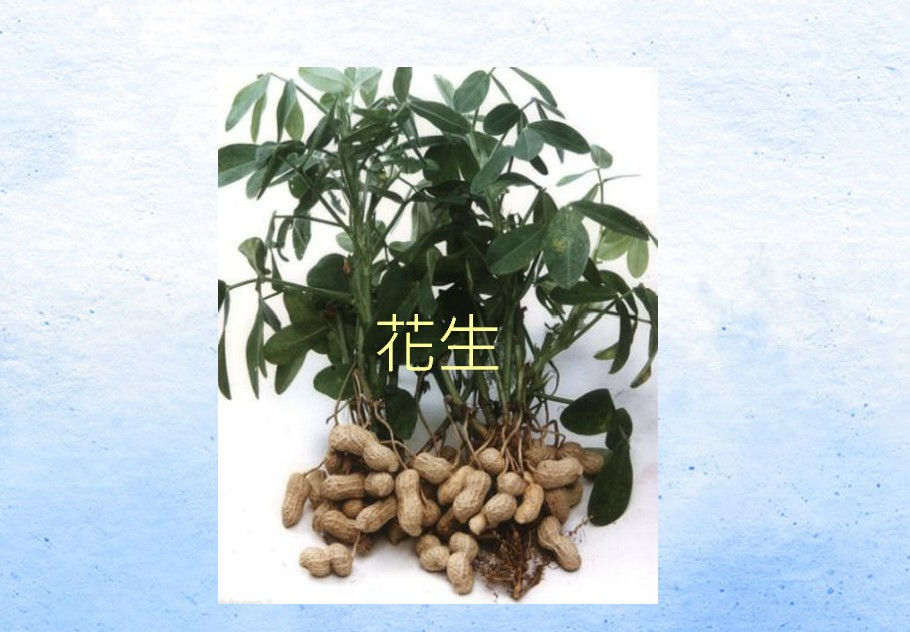
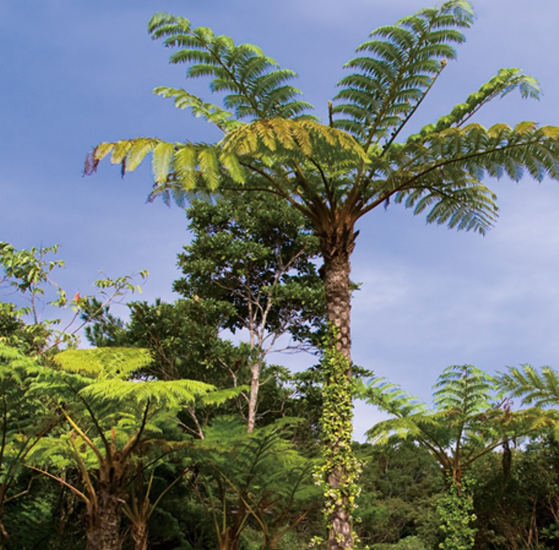

蕨類植物比蘚苔植物有更完整的陸地生活構造。它們有 維管束，因此通常能長得比較高， 也有明顯的根、莖、葉。
這一頁你會觀察蕨類的身體構造、幼葉外形、 孢子囊堆與孢子傳播流程， 還會認識臺灣「蕨類王國」的小知識。
蕨類植物具有明顯的根、莖、葉， 許多種類還可以看到捲曲幼葉與葉背的孢子囊堆。
互動任務：先點左邊名稱，再點右邊圖片上的正確位置
全部找完後，才可以檢查答案。
蕨類剛長出的葉常呈捲曲狀， 成熟後會慢慢展開。
互動任務：先翻看卡片，再選出剛長出的蕨類葉
三張卡片都翻過後，才能檢查答案。
點一下翻面
剛長出的蕨類葉，常呈捲曲狀。

點一下翻面
葉片展開後，面積變大，更容易進行光合作用。
點一下翻面
從整株來看，更容易比較幼葉與成熟葉的差異。
蕨類葉背常可以看到褐色的孢子囊堆， 這是蕨類形成孢子的地方。
互動任務：點選葉背圖上的孢子囊堆
找對位置後，才可以檢查答案。

蕨類植物不用種子繁殖，而是靠孢子完成生活史。
互動任務：依照正確順序點選流程卡片
先點下方選項，再點上方對應步驟放入。選項會隨機排列。
臺灣環境潮溼、多山，適合許多蕨類生長，因此有「蕨類王國」之稱。
互動任務：先點地圖上的知識點，再回答問題
讀完彈窗知識後，再選出最合理的原因。

有些蕨類可以做為觀葉植物， 有些可以食用，還有些屬於高大的樹狀蕨類。
互動任務：幫蕨類選出最合適的用途或分類
每列都要選好，才能檢查答案。




依照有根、莖、葉、 幼葉捲曲、 葉背孢子囊堆等線索， 來判斷這些植物是不是蕨類。
互動任務：先看線索，再判斷是不是蕨類
每張卡都要完成判斷。


